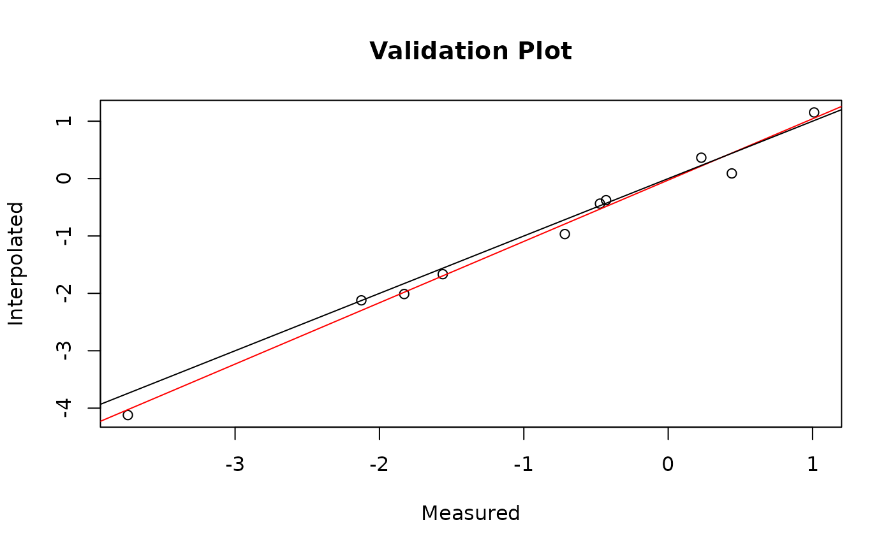

Generate error statistics from validation point datasets overlaid on a raster surface
errorGen(
finalraster,
validation.sf_ob,
validation.data,
plot = FALSE,
title = ""
)RasterLayer object
sf object with points geometry
data.frame
logical. Plot comparison?
Plot labels
List of error statistics
library(sf)
#> Linking to GEOS 3.11.1, GDAL 3.6.1, PROJ 9.1.1; sf_use_s2() is TRUE
validation.data <- data.frame(rnorm(10, mean = 0.2, sd = 1))
names(validation.data) <- c("validation")
validation.sf_ob <- validation.data
validation.data <- as.numeric(unlist(validation.data))
xy <- data.frame(x = c(0:9), y = rep(1, 10))
validation.sf_ob <- st_as_sf(cbind(validation.sf_ob, xy), coords = c("x", "y"))
m <- matrix(NA, 1, 10)
out.ras <- raster(m, xmn = 0, xmx = ncol(m), ymn = 0, ymx = nrow(m))
out.ras[] <- validation.data + rnorm(ncell(out.ras), mean = 0.01, sd = 0.2)
valid.stats <- errorGen(out.ras, validation.sf_ob, validation.data, plot = TRUE,
title = "Validation Plot")

valid.stats
#> [[1]]
#> r2 rmse pe logmse
#> 1 0.99 0.2 131.33 -3.18
#>
#> [[2]]
#> validation.data predicted
#> 1 1.0107014 1.15222473
#> 2 -2.1253690 -2.12131479
#> 3 0.4406080 0.08990841
#> 4 -1.5616918 -1.66553006
#> 5 -0.4726455 -0.43624251
#> 6 -1.8285199 -2.01160455
#> 7 -0.4302755 -0.37619675
#> 8 -3.7426556 -4.12028416
#> 9 -0.7158509 -0.96657834
#> 10 0.2293261 0.36391096
#>